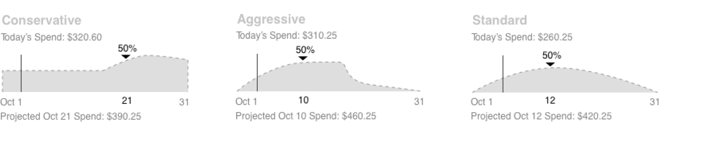
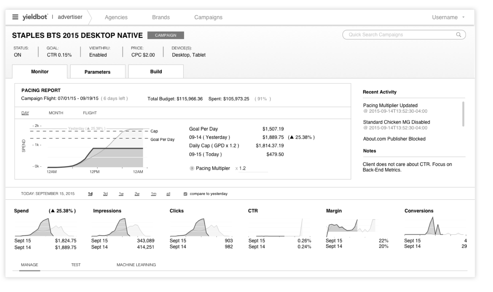
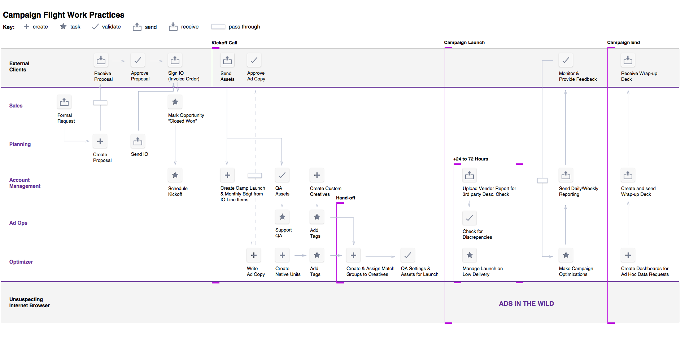
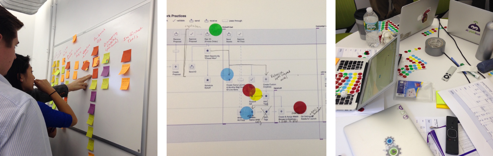

It took many wireframes and iterations to isolate the layouts and visualization techniques that would be most legible for users.

The final layout of the interface focused on maximizing vertical space. UI elements were compressed to make sure everything about a campaign could be understood without a scroll.

Process
During the campaign lifecycle, from launch through flight, there are a number of different users responsible for a variety or tasks.
In order to help prioritize and understand the different stakeholders, I took on a number of exercises diagramming the campaign flight process.

This was a very collaborative experience, which involved a number of design exercises to build consensus.
